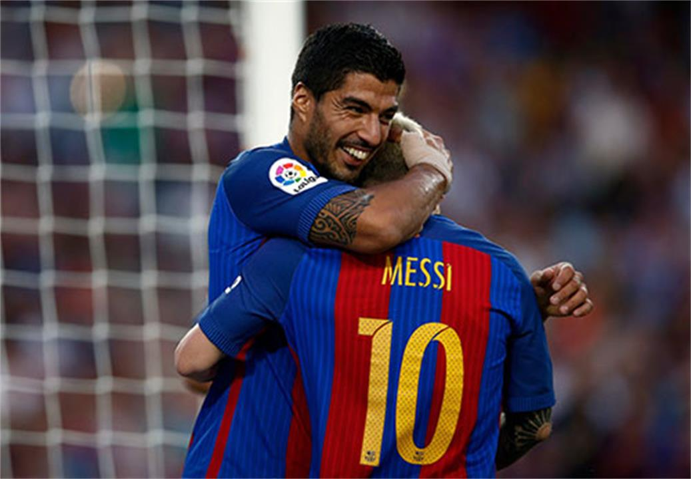

菜鸡的我最近想写很多页面打开的特效，然后实力不足（不用任何插件）。比如像玻璃碎裂一样，打开下一个页面；又或者水滴滴下，朝四周波纹状散开等等。碰到一个新属性clip-path。perspective的话见3号写的
clip-path是用来创建各种自定义图形的。
这么一张图片，300 * 150，比如我现在只要梅西的10号，并且是一个圆的形式。
clip-path: circle(15% at 60% 75%);
15%表示圆半径，后两个分别是X轴Y轴位置，写具体px也是无所谓的。
椭圆:
最重要还是掌握用polygon来画图~这个就是写出很多点坐标，连在一起就OK了。
三角形:
沙漏：
矩形：
只要你愿意，可以画很多样子~我再加上transition试试
transition无效。。。懵逼。。原来是变换前后的坐标必须一致。。。
oh yeah~